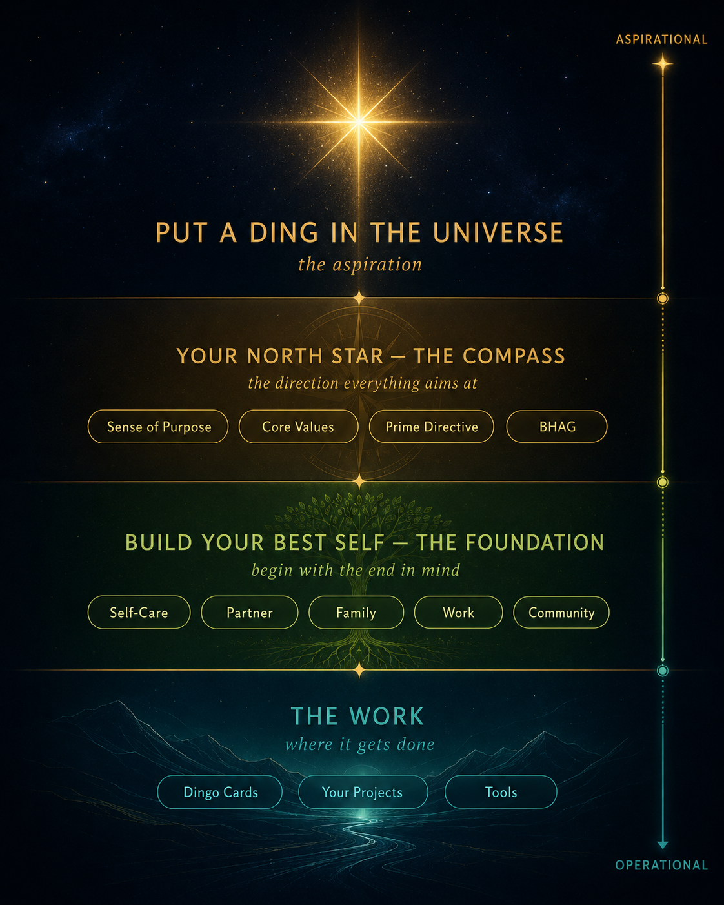

The Research Behind Your North Star
Why this works — the thinking, the people, and the practice behind finding the one statement that guides your life. No jargon, no fluff; just where it comes from.
The premise · a sense of destiny
What makes the great great isn't talent, wealth, or luck. It's a sense of destiny — a clear, felt purpose that organizes a whole life.
That single idea is the root of the Destiny Discovered tradition this work draws from — a body of study built on the biographies of remarkable people, asking what they had in common. The answer wasn't circumstance. It was a Prime North Star they could name, and lived toward on purpose.
A life needs three things: a sense of purpose, the opportunity to contribute, and a legacy worth leaving.
🎯Purpose — your reason to get up
Purpose is the reason bigger than yourself — the "why" that pulls you out of bed before anyone asks you to. It isn't a job title or a finish line. It's the sense that your days point somewhere, that your effort matters to something beyond your own comfort.
The idea runs deep. The psychiatrist Viktor Frankl, who survived the Nazi concentration camps, argued in Man's Search for Meaning that the people most able to endure unbearable hardship were often those who held on to a reason to live — a person to return to, a work left unfinished. The Japanese have a word for this everyday sense of direction: ikigai, loosely "a reason for being." Researchers who study meaning tend to find it alongside greater resilience and well-being, and some long-term studies link a strong sense of purpose with healthier, longer lives. The science is still maturing — but the direction of the evidence is encouraging, and the human testimony is very old.
🤝Contribution — giving the world can feel
Achievement is about what you gather for yourself. Contribution is about what you give that someone else actually feels — the help, the work, the kindness that lands in another person's life and changes their day.
It's easy to assume fulfillment comes from winning: the promotion, the prize, the next milestone. Those moments feel good, but they fade fast, and the goalposts move. What seems to last is the quieter satisfaction of being useful to others — of knowing your existence made someone's load lighter. You don't need a grand platform for this. Contribution scales down to the daily: a problem you solved, a skill you taught, a moment you showed up when it counted. The point isn't applause — it's that the giving is real, and felt.
🌱Legacy — a ding in the universe
Legacy is what outlasts you — the mark you leave that keeps working after you've gone. Steve Jobs called it putting a "dent in the universe" (Tim's own warmer version: a "Ding in the Universe"). It doesn't have to be famous or carved in stone. It can be people you raised, values you passed on, or work that quietly keeps serving long after your name is forgotten.
There's a simple, clarifying practice behind it: live with the end in mind. When you picture, honestly, what you'd want said of you one day — what you'd want to have built, mended, or set in motion — the noise of the moment gets quieter and your real priorities step forward. You're not trying to be remembered for its own sake; you're trying to build something worth continuing.
Standing on giants' shoulders
This method doesn't invent the wheel. It braids together the best thinking on purpose into one practical path — "a Lean Canvas for your life."
Stephen R. Covey — begin with the end in mind
Stephen Covey's The 7 Habits of Highly Effective People (1989) is one of the best-selling personal-development books ever written. Its most quietly powerful idea is Habit 2: "Begin with the end in mind." Before you act, get clear on where you actually want to end up.
Covey makes this vivid with a famous exercise. Picture your own funeral years from now, and the people who matter most each standing up to speak about you. What would you want them to honestly say about the kind of person you were and the life you led? Whatever rises up, Covey argues, that is your real definition of success — and most of us have never stopped to name it.
From there he suggests writing a personal mission statement: a short, plain description of who you want to be and what you stand for. He pairs it with thinking in terms of your "roles" — parent, partner, friend, builder, neighbour — so your purpose isn't a slogan but something lived out in the real relationships of your week, anchored to deep values rather than whatever is loudest today.
The "Destiny Discovered" program — a sense-of-destiny tradition
There's an idea at the heart of this program that is simple but striking: what makes the great great is a sense of destiny. It grew out of a tradition that, by its own account, spent decades studying the life stories of remarkable people — around 1,600 biographies, from Churchill and Gandhi to Marie Curie and Martin Luther King Jr. Reading across those lives, it draws one conclusion: each lived by a clear personal code they rarely changed and returned to for every important decision. That's the program's own founding premise — the lens it offers — not a scientific finding we ask you to take as proven.
What it does with that idea is turn it into a guided act of reflection: thirty thoughtful questions about your values, your beliefs, what you'll stand for, and what you'd never do. There are no right or wrong answers. The questions are meant to be sat with, not rushed — a slow, honest conversation with yourself about how you actually want to live.
Underneath all thirty is one quiet claim about what a meaningful life needs: three things. A sense of purpose (why am I here?), an opportunity to contribute (what can I give?), and a developing legacy (what will I leave behind?). Discover those three, the program suggests, and you've found your North Star.
Jim Collins — aim for a Big Hairy Audacious Goal
Jim Collins studies why some companies become truly great while similar ones stay ordinary. In Built to Last (1994) and Good to Great (2001) he gave the world two ideas that work just as well for a single human life as for a company.
The first is the BHAG — a "Big Hairy Audacious Goal" (say it "bee-hag"). A real BHAG isn't a tidy to-do item. It has a long horizon (think 10 to 30 years), it's clear and concrete enough that you'll know without argument whether you hit it, and — crucially — it's a little scary. It should make you gulp. A goal that big pulls you forward and organizes years of effort around something that matters.
The second is the Hedgehog Concept, built on three overlapping questions: What are you deeply passionate about? What could you be the best in the world at? And what drives your engine — what can you do that the world will actually reward and sustain? The sweet spot sits where all three overlap. Chasing things outside it scatters your energy; living inside it compounds it.
Clayton Christensen — hire your life for a job
Clayton Christensen was a Harvard Business School professor famous for a deceptively simple question about why people buy things. His answer became "Jobs to Be Done," explored in Competing Against Luck (2016).
His classic example: a chain wanted to sell more milkshakes. The breakthrough came when researchers stopped asking "what milkshake do customers want?" and asked "what job are they hiring this milkshake to do?" Many were bought by morning commuters facing a long, boring drive — thick enough to last, easy to manage one-handed. People weren't buying a milkshake; they were hiring it to make a dull commute bearable. Nobody buys a product for its own sake; they hire it to make progress on something in their life.
Late in his career, in "How Will You Measure Your Life?" (Harvard Business Review, 2010; later a book), Christensen turned the same lens on living well. The theories that explain great companies, he argued, also explain a great life: be just as deliberate about why you do what you do, and about the relationships and purpose you're really hiring your work and time to serve.
Steve Jobs — put a dent in the universe
Steve Jobs, co-founder of Apple, is remembered not just for products but for a near-obsessive sense of purpose. His most quoted line captures it: he wanted to "put a dent in the universe" — to do work so meaningful it would visibly change the world. (It's this phrase Tim riffs on with his own warmer "Ding in the Universe.")
His clearest statement on how to live came in his 2005 commencement address at Stanford. He told three stories. In the first he described dropping out of college and wandering into a calligraphy class — useless at the time, but a decade later it shaped the typography of the first Macintosh. His lesson: "You can't connect the dots looking forward; you can only connect them looking backwards." You have to trust your steps will eventually add up.
He then spoke about mortality with startling directness: "Death is the destination we all share," and remembering you will die is the best tool he knew for making big choices — because almost everything falls away in the face of it, leaving only what truly matters. He closed with the words he grew up admiring: "Stay hungry. Stay foolish."
Tim Latimer — a Lean Canvas for your life
Tim Latimer's contribution is to make all of this usable. He's the founder behind Business as a Force for Good and the idea he calls Social Impact Capitalism — the belief that a business can pursue real profit and real good at once, and be stronger for it. He took the sense-of-destiny tradition, Covey's idea that our lives are made of important roles, and his own hard-won purpose statement, and folded them into one practical do-it-yourself method.
He calls it a Lean Canvas for your life. In the startup world, the Lean Canvas turns a tangled business plan into a single focused page by asking the right questions in the right order. Tim applies the same move to the most personal question there is — what is my life for? — so a clear answer can emerge with the same speed and clarity. It's a structured journey, not a quiz, and it ends in a written North Star statement you can live by.
Anchoring it is his own "Before I Die" purpose, his Prime North Star: "Put a Ding in the Universe through Social Impact Capitalism." That one line sits at the very top. Then every project and role gets its own Local North Star — a smaller, specific purpose that rhymes with the big one — so daily work and life's purpose stay in tune.
The framework · one picture of the whole thing

Top to bottom — the aspiration, the star, the self you build, and the work.
Read it from the top down. At the apex is the aspiration — your Ding in the Universe. Just below sits your North Star, the compass (Sense of Purpose · Core Values · Prime Directive · BHAG) that sets the direction. Then the part most people skip: you build your best self — the Covey foundation of self, family and community, "begin with the end in mind" — because you become the person who can reach the star. Resting on all of it, the work: your Dingo Cards and projects — the Local North Stars that rhyme with the Prime. The top half is aspirational; the base is where it gets done.
One Prime, many Locals — and they all rhyme
You have one Prime North Star — the purpose at the apex of your whole life. Then every project, role, or venture below it declares its own Local North Star that rhymes with the Prime — like verses in the same song. When they rhyme, the work pulls in one direction. When they don't, you feel the drag. Get the North Star right, and the work starts to steer itself.
What a North Star is made of
Whether it's your Prime or a Local, a North Star statement that works has three parts:
8 words or fewer
Short enough to remember, with a noble cause inside it. If you can't say the ding it makes, keep refining.
A 3–5 year goal
Big, audacious, and concrete — with numbers in the sentence, so you know if you hit it.
Two to four
Each one driving a behaviour you'd actually recognize — not wall-poster words.
What happens when a pillar is missing

Leave a pillar out, and execution fails in a predictable way. This is the quiet diagnostic — when a team or a life feels stuck, look for the missing pillar:
| Missing Purpose (the why) | Resistance |
| Missing BHAG (the goal) | Confusion |
| Missing Core Values | Mistrust |
| Missing Sense of Urgency | Frustration |
| Missing Disciplined Execution | False Starts |
From research to practice
Two ways to do the work — both private, both on your own device:
Two practical touches the research shapes: the journey is mapped as a "Destination / You Are Here" progress picture — built on the goal-gradient effect, the simple truth that we push harder as the finish line gets closer — and, for those who opt in one day, anonymized answers can reveal the patterns in what gives people purpose, across many North Stars.
Where this is going
Sources & influences
- Stephen R. Covey — The 7 Habits of Highly Effective People (roles, "begin with the end in mind," the funeral exercise)
- Jim Collins — Good to Great (the BHAG)
- Clayton Christensen — Competing Against Luck & "How Will You Measure Your Life?" (Jobs to Be Done)
- Steve Jobs — "put a dent in the universe" & the 2005 Stanford commencement address
- Viktor Frankl — Man's Search for Meaning (purpose & meaning)
- The "Destiny Discovered" sense-of-destiny program — the 30-question instrument
← Back to Find Your North Star